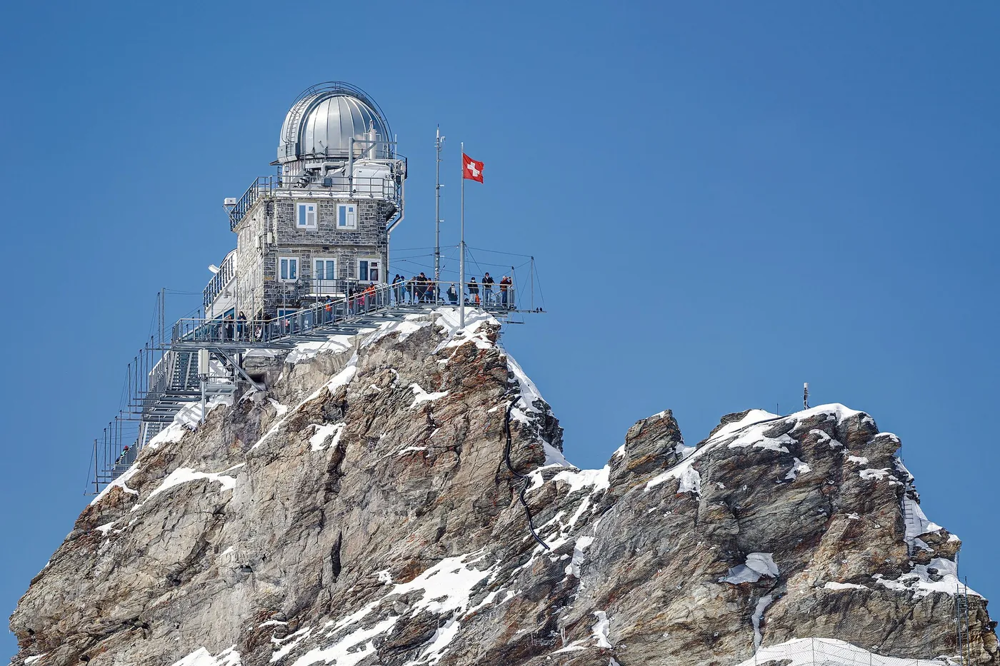

Hiver
18 December 2026 — 3 January 2027 Paris, Strasbourg, Interlaken, Lucerneลาพักร้อนช่วงปลายปีที่ฝรั่งเศสและสวิตเซอร์แลนด์ ตอบข้อความได้ช่วงสั้น ๆ ในวันทำการ และกลับมาทำงานตามปกติวันจันทร์ที่ 4 มกราคม
Bangkok to winter, then home.
สองประเทศ สี่เมือง สิบสองคืน บินตรงไปปารีสและบินกลับจากซูริก ระหว่างทางเดินทางด้วยรถไฟทั้งหมด

Solo, by rail.
ทริปเดี่ยวช่วงคริสต์มาส อยู่เมืองละหลายคืนเพื่อเดินเที่ยวแบบไม่เร่ง เช้าวันทำการเปิดดูงานก่อนออกเดินทาง แล้วใช้เวลาที่เหลือกับพิพิธภัณฑ์ ตลาดคริสต์มาส และเทือกเขาแอลป์
Availability calendar
แสดงวันทำงาน วันลา วันเดินทาง และวันหยุด แตะวันที่เพื่อดูว่าอยู่เมืองไหนและติดต่อได้กี่โมง
Hours, day by day
เวลาประเทศไทย · ยุโรปช้ากว่าไทย 6 ชั่วโมง (08:00 ที่ยุโรป = 14:00 ที่ไทย)
Daily plan, city by city.
เมือง สิ่งที่จะทำ อุณหภูมิโดยประมาณ และช่วงที่ติดต่อได้ทั้งเวลายุโรปและเวลาไทย
How to reach me
เรื่องด่วน
ส่งทาง Slack พร้อมสรุปสั้น ๆ ว่าต้องการให้ตัดสินใจหรือช่วยเรื่องอะไร จะตอบในช่วง 13:00–14:30 ของวันทำการ
เรื่องไม่ด่วน
เก็บไว้คุยหลังวันที่ 4 มกราคม หรือส่งอีเมลไว้ก่อน จะไล่อ่านทั้งหมดในวันแรกที่กลับมา
วันที่ไม่ได้เช็คข้อความ
เสาร์–อาทิตย์ระหว่างทริป และวันที่ 31 ธันวาคม ถึง 3 มกราคม